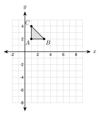
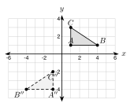
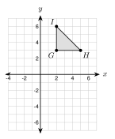
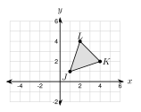

1.
2.
3.
Translate P(2, 5) by (x + 3, y − 2). Then reflect the image over the y-axis.
Step 1: P′ = (2 + 3, 5 − 2) =
Step 2: P′′ = (−5, 3), so P′′ =
Combined rule: (x, y) → (, ). Check: (−2 − 3, 5 − 2) = (−5, 3).
a. Reflect Q(−4, 1) over the x-axis. Then translate by (x + 6, y + 2). Find Q′′.
b. Translate by (x + 2, y + 5). Then translate by (x − 7, y − 1). Write one rule.
Use P(2, 1). Do these two moves in both orders: reflect over the x-axis, and translate by (x + 4, y − 3).
Reflect first: (2, −1). Then translate: .
Translate first: (6, −2). Then reflect: .
The images are different. So order here.

A(1, 2), B(3, 2), C(1, 4). Reflect over the x-axis, then translate by (x + 4, y − 3). This gives A1, B1, C1. Do the moves in the other order to get A2, B2, C2.
A1 = , B1 = , C1 =
A2 = , B2 = , C2 =

△ ABC with A(1, 1), B(4, 1), C(1, 3) maps to △ A′′B′′C′′. Describe a sequence.
The labels go the other way around, so the sequence includes a .
Reflect over the y-axis: A′ = . Then translate: A′′ = (−1, −4), which is : (x, y − 5).
Another answer: translate 5 down first, then reflect over the y-axis. It gives the same △ A′′B′′C′′.
| Transformation | Keeps lengths? | Keeps angles? | Rigid motion? |
|---|---|---|---|
| translation | yes | yes | yes |
| reflection | yes | yes | yes |
| rotation | yes | yes | yes |
| dilation (k ≠ 1) |
Which transformation fits each description?
a. Lengths and angles stay the same. The figure is flipped.
b. All lengths double. Angles stay the same.
c. Lengths and angles stay the same. The figure is only moved over.
Find the lines of symmetry and the order of rotational symmetry.
H: 2 lines (vertical and horizontal). Turn 180° and it fits. Order .
S: lines. Turn 180° and it fits. Order .
A: line (vertical). No turn less than 360° fits. Order .
A regular polygon with n sides has n lines of symmetry and rotational symmetry of order n (see 1.5).
Equilateral triangle: lines, order , smallest angle 3603 = .
Square: lines, order , smallest angle 3604 = .
Regular pentagon: lines, order , smallest angle 3605 = .
1. After two moves, A becomes A′′, read "A prime".
2. Two moves in a different can give different images.
3. A sequence of rigid motions is a motion. A is not.
4. A regular polygon with n sides has lines of symmetry and its smallest rotation is 360°n.
1. (1, 4): translate by (x + 2, y − 3), then reflect over the x-axis.
2. (−3, 2): reflect over the y-axis, then translate by (x − 1, y + 4).
3. (4, −1): rotate 90° counterclockwise about the origin, then reflect over the x-axis.
4. (−2, −5): dilate with k = 2 about the origin, then translate by (x + 3, y + 3).
5. (5, 3): rotate 180° about the origin, then reflect over the y-axis.
6. (0, 6): reflect over the line y = x, then rotate 270° counterclockwise about the origin.
7. Translate by (x + 4, y − 1). Then reflect over the y-axis.
8. Reflect over the x-axis. Then dilate with k = 3 about the origin.
9. Translate by (x + 2, y + 5). Then translate by (x − 7, y − 1).
10. Rotate 180° about the origin. Then translate by (x + 6, y − 2).

11. Reflect △ GHI over the x-axis. Then translate by (x − 3, y + 2). Give the coordinates of G′′, H′′, I′′.

12. Rotate △ JKL by 90° counterclockwise about the origin. Then translate by (x + 2, y − 1). Give the coordinates of J′′, K′′, L′′.
13. Use P(2, 5). Show that "translate by (x + 3, y), then reflect over the y-axis" is different from "reflect over the y-axis, then translate by (x + 3, y)".
14. True or false: two translations in either order give the same image. Explain.
15. Diego says "reflect over the x-axis, then over the y-axis" is the same as a 180° rotation about the origin. Test it with (3, −2).
16. A(1, 2), B(4, 2), C(1, 5) map to A′′(−1, −2), B′′(−4, −2), C′′(−1, −5). Find one transformation that does it.
17. D(1, 1), E(3, 1), F(1, 4) map to D′′(5, 0), E′′(7, 0), F′′(5, −3). Describe a sequence.
18. Describe a different sequence for problem 17.
19. A transformation keeps all lengths and angles. Which of these could it be: translation, reflection, rotation, dilation?
20. A triangle with sides 3, 4, 5 maps to a triangle with sides 6, 8, 10 and the same angles. Which transformation is it? Is it a rigid motion?
21. True or false: every dilation is a rigid motion. Explain.
22. The rectangle.
23. The regular hexagon.
24. The isosceles triangle.
25. A regular octagon.
26. The letter N.
27. A hubcap with 5 equal spokes.
28. A snowflake with 6 equal arms.
29. A regular polygon has a smallest rotation of 36°. How many sides does it have?
30. Fatima says a rectangle that is not a square has 4 lines of symmetry because a square has 4. What is wrong?
A. (−1, 1)
B. (−1, −1)
C. (1, 1)
D. (−7, 3)
A. regular octagon
B. regular hexagon
C. regular nonagon
D. regular decagon